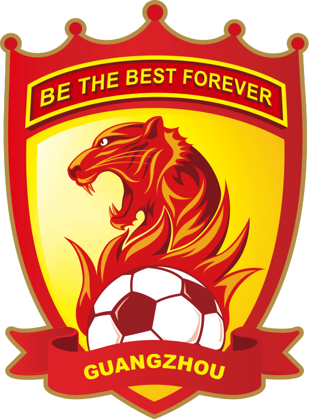

足球名队
-
全球名队

皇家马德里足球俱乐部（Real Madrid CF），简称“皇马”，是一家位于西班牙首都马德里的足球俱乐部，球队成立于1902年3月6日，前称马德里足球队。1920年6月29日，时任西班牙国王阿方索十三世把"Real"（西语，皇家之意）一词加于俱乐部名前，徽章上加上了皇冠，以此来推动足球运动在西班牙首都马德里市的发展。从此，俱乐部正式更名为皇家马德里足球俱乐部。 皇家马德里足球俱乐部拥有众多世界球星。2000年12月11日被国际足球联合会（FIFA）评为20世纪最伟大的球队。2009年9月10日被国际足球历史和统计联合会评为20世纪欧洲最佳俱乐部。皇家马德里夺得过14次欧冠冠军（夺冠次数欧洲足坛第一）、35次西班牙足球甲级联赛冠军（西甲第一）、19次西班牙国王杯冠军、12次西班牙超级杯冠军、4次欧洲超级杯冠军和7次俱乐部赛事世界冠军（其中国际足联俱乐部世界杯冠军4次，夺冠次数第一）。
利物浦足球俱乐部（Liverpool F.C.），简称“利物浦”，是一家位于英格兰西北部默西赛德郡港口城市利物浦的足球俱乐部，成立于1892年，是英格兰足球超级联赛的球队之一。 利物浦是英格兰足球历史上最成功的俱乐部之一，也是欧洲乃至世界最成功的足球俱乐部之一。 [1] 利物浦一共夺取过19次英格兰顶级联赛冠军、8次英格兰足总杯冠军、9次英格兰联赛杯冠军、15次英格兰社区盾杯冠军、6次欧洲冠军联赛（含欧洲冠军俱乐部杯）冠军、3次欧洲足联欧洲联赛（含欧洲联盟杯）冠军、4次欧洲超级杯冠军以及1次国际足联俱乐部世界杯冠军
-
亚洲名队
广州足球俱乐部（Guangzhou F.C.），曾名广州恒大，是一家位于中国广东省广州市的足球俱乐部，现参加中国足球协会超级联赛。2011赛季启用广州天河体育场作为主场。2020年4月16日，广州恒大足球场开工。 广州足球俱乐部前身是成立于1954年的广州市足球队。1993年1月，广州市足球队通过和太阳神集团合作，成为中国第一家政府与企业合股的职业足球俱乐部。2010年3月1日，恒大集团买断球队全部股权，俱乐部更名为广州恒大足球俱乐部。2012年俱乐部首次参加亚洲足球俱乐部冠军联赛并进入八强，2013年获得亚洲足球俱乐部冠军联赛冠军，这也是中国足球俱乐部第一次问鼎该项赛事的冠军，同年获亚足联最佳俱乐部奖。2014年7月4日，俱乐部更名为广州恒大淘宝足球俱乐部。2015年11月6日，恒大淘宝正式上市，登陆新三板，成为亚洲足球第一股。2021年1月，俱乐部名称变更为“广州足球俱乐部”，简称为“广州队”2019年12月1日，球队获得2019赛季中国足球协会超级联赛冠军。至此，球队已获得八次中超联赛冠军（最多）、四次中国足球协会超级杯冠军、两次中国足球协会杯赛冠军、两次亚洲冠军联赛冠军。
浦和红钻足球俱乐部（Urawa Red Diamonds）是一家位于日本埼玉县埼玉市的足球俱乐部，现征战于日本职业足球甲级联赛。球队主场包括为举行2002年韩日世界杯而兴建的埼玉2002体育场及曾用主场埼玉市浦和驹场体育场。 浦和红钻前身为三菱重工足球部，由日本企业三菱重工于1950年创立。1992年4月，俱乐部独立运营企业“三菱汽车足球俱乐部”（现浦和红钻股份有限公司）成立。1993年参加首届日本职业足球联赛。1996年2月，俱乐部更名为“浦和红钻”。2003年和2005年，浦和红钻分别首获日本联赛杯及日本天皇杯冠军。2006年，俱乐部一举斩获该年日本职业足球甲级联赛冠军、日本超级杯冠军并卫冕日本天皇杯冠军。2007年，浦和红钻首次参加亚洲冠军联赛并成功夺冠，成为亚冠联赛改制后首只夺冠的日本球队。2015年，日本J1联赛改制为双阶段赛制，浦和红钻在联赛第一阶段排名榜首收获阶段冠军